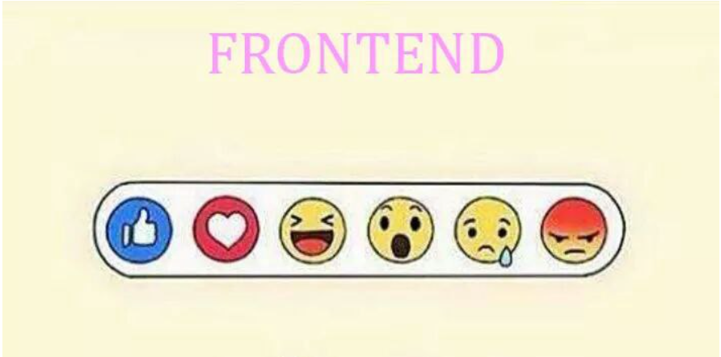

DEV
Front and Back
FrontEnd
사용자가 웹 사이트 또는 웹 애플리케이션의 URL을 입력하거나
모바일 애플리케이션을 다운로드할 때,
사용자들은 아주 깔끔한 레이아웃을 가진 인터페이스를 보게 됨.
이렇게 사용자가 마주보는 인터페이스를 테크롤로지 분야에서
‘프론트엔드’라고 부름.
프론트엔드는 사용하기 쉽고 완전한 기능을 갖춘 인터페이스를 갖추었을 때에만 사용자들의 참여를 이끌어내기 때문에,
아주 중요한 요소라고 할 수 있는데, 서비스의 경쟁력을 유지하기 위해서는, 매끄럽게 동작하는 강력한 프론트엔드를 구축하는 것이 매우 중요하다.

FrontEnd Development?
사용자들이 웹사이트에서 보고 상호작용하는 모든 것들이 프론트엔드 개발 분야에 속한다.
프론트엔드 개발은 주로 웹 및 모바일 솔루션의 사용자 인터페이스(UI)와 사용자 경험(UX)을 만드는 데 초점을 맞추고 있다.
메뉴, 레이아웃, 폰트, 컬러 등 모든 요소들이 프론트엔드 개발을 이룬다.
모바일 또는 웹 애플리케이션을 위한 완벽한 프론트엔드를 만들기 위해서는, 구체적인 요구사항, 목표, 기회 등을 이해하고 그에 따른 프론트엔드를 만들어낼 수 있는 개발업체와 협업하는 것이 매우 중요하다.
BackEnd
용어 자체에서 알 수 있듯이,
백엔드는 웹사이트나 웹 애플리케이션 또는 모바일 솔루션의 프로세스와 관련된 서버측(server-side)과 데이터베이스를 관리해주는 테크놀로지이다.
프론트엔드가 눈에 직접적으로 보여지는 영역이였다면, 백엔드는 눈에 보이지 않는 서버에서 작용하는 기술을 다룬다.
BackEnd Development?
백엔드는 소프트웨어 개발 프로세스에서 서버 측 개발 분야이다.
백엔드에서는 데이터를 저장하고 관리하며, 웹사이트의 클라이언트 측(client-side)에서 모든 것이 매끄럽게 작동할 수 있게 해줍니다.
백엔드는 사용자들이 직접 보거나 상호작용할 수는 없지만, 소프트웨어 개발의 일부분인 것은 맞습니다.
백엔드에서는 프론트엔드에 있는 사용자들이 취하는 행동들을 처리합니다.
즉, 사용자들은 백엔드에 간접적으로 액세스하는 것이죠. 백엔드 개발에는 사용자 인터페이스가 없는 시스템 컴포넌트 작업, API작성, 라이브러리 생성, 데이터베이스 통합 등 다양한 활동들이 포함되어 있습니다
LANG
HTML? JAVA?
FrontEnd Programing LANG
▶ HTML:
HTML은 하이퍼텍스트와 마크업 언어로 구성되어 있다.
하이퍼텍스트는 페이지들 사이의 링크를 정의해 줌. 반면에 마크업 언어는 웹페이지의 구조를 정의하는데 사용된다.
▶ CSS:
CSS는 종속 스타일 시트(Cascading Style Sheets)의 약자이다.
CSS는 개발자가 웹페이지에 다양한 스타일을 적용할 수 있게 해줌으로써 애플리케이션 페이지를 표시하는 프로세스를 단순하게 만들어주는 디자인 언어이다.
CSS는 HTML보다 독립적으로 작동해서 각 웹페이지들을 보완해 준다.
▶ Javascript:
자바스크립트는 어마어마할 정도로 인기가 많은 언어로써, 사용자들을 위해 상호작용하는 애플리케이션을 만들 수 있도록 도와준다.
또한, 웹사이트의 기능성을 향상시키는데 사용되며, 웹 기반의 소프트웨어 또는 게임들을 실행할 수 있게 해주기도 한다.
BackEnd Programing LANG
▶ PHP:
특별히 웹 애플리케이션 개발을 위해서 고안된 서버 측 스크립트 언어이다.
PHP는 서버 측에서 실행되기 때문에, 특히 서버 측 언어로서 많은 인기를 얻고 있다.
▶ Node.js:
노드는 크로스 플랫폼의 오픈소스 런타임(run time) 환경으로써, 브라우저의 외부에서 자바스크립트 코드를 실행할 수 있게 해준다.
노드는 프로그래밍 언어도 아니고, 프레임워크도 아니다
▶ Javascript:
앞서 프론트엔드 때 소개해드렸던 자바스크립트는, 프론트엔드 백엔드 모두에서 사용할 수 있는 프로그래밍 언어이다
▶ C++:
C++은 요즘에도 경쟁력을 갖추기 위해서 가장 널리 사용되는 프로그래밍 언어이다
또한, 백엔드 언어로도 많은 인기를 얻고 있다.
▶ Java:
자바는 가장 인기 있는 프로그래밍 언어들 중 하나이며, 개발자 커뮤니티에서 널리 사용되고 있는데,
자바의 컴포넌트는 쉽게 사용할 수 있기 때문에 확장성이 아주 뛰어난 플랫폼이라고 말할 수 있다.
▶ Python:
파이썬은 개발자들이 시스템을 효율적으로 통합하고, 빠르게 작업할 수 있게 해주는 최고의 프로그래밍 언어입니다.
 프론트 엔드내용 입력More
프론트 엔드내용 입력More 백 엔드내용 입력More
백 엔드내용 입력More 풀 스택내용 입력More
풀 스택내용 입력More